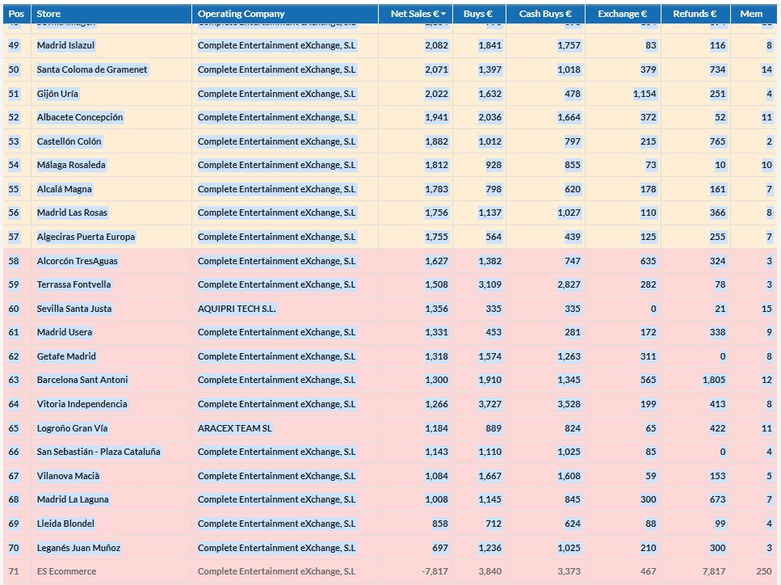

4 semanas
Actualización de 4WKS
Carga el registro diario e incorpora días cerrados. Calcula el 4WKS real con todas las métricas.
Simulador rápido
Proyección en tiempo real de dónde termina tu tienda en el ranking al cierre de semana.
Global
Día a día
Tabla completa de un día concreto con todas las tiendas, métricas y distancia a tu tienda.
Semana a semana
Clasificación de cualquier semana por V+C, ventas, compras, socios o devoluciones.
Tienda
Histórico días
Vista día a día de una tienda con ranking, métricas, rodante 7 días e hitos anotables.
Histórico semanas
Histórico de una tienda semana a semana con ranking, V+C, 4WKS rodante y coloreado gradual.
Análisis
Análisis por rango
Gráfica de barras de cualquier métrica para el rango de fechas que elijas, con presets personalizados.
Patrón semanal
Heatmap por día de la semana CEX para detectar patrones (sábados fuertes, lunes flojos…) en el histórico.
Actualización de 4WKS
Registro histórico completo + incorporación de días cerrados
Modo 4WKS
—
Presets
—días
—
—sem.
Incorporar día cerrado
Desde el home del portal CEX, selecciona y copia la tabla del día a importar, ordenado por ventas, sin cabecera y hasta la última tienda antes de ES Ecommerce.

Atajo: bookmarklet
Crea un marcador en tu navegador (Ctrl+D), pega el script copiado como dirección/URL, y haz click en él desde el portal CEX. Copiará la tabla automáticamente.
Últimas incorporaciones
Sin entradas todavía
| # | Δ | Tienda | V+C 4WKS ▼ | Ventas | Compras | Socios | Devol. | Distancia |
|---|---|---|---|---|---|---|---|---|
| Carga el registro diario para calcular el 4WKS | ||||||||
Día a día
Tabla completa de un día · Todas las tiendas · Distancia a tu tienda
| # ▲ | Tienda | V+C | Net Sales | Buys | Cash Buys | Exch. Buys | Refunds | Members | Distancia |
|---|---|---|---|---|---|---|---|---|---|
| Carga el registro diario en «Actualización 4WKS» para ver la tabla completa de un día | |||||||||
Histórico días
Rendimiento día a día de una tienda · Rodante 7 días · Hitos
| WK | Fecha ▼ | Día | Ranking | V+C | Net Sales | Buys | Cash Buys | Exch. Buys | Refunds | Members | 7 últimos | Media 7 | Hitos |
|---|---|---|---|---|---|---|---|---|---|---|---|---|---|
| Carga el registro diario en «Actualización 4WKS» para ver el histórico de días | |||||||||||||
Histórico semanas
Histórico de una tienda · Semana a semana · Totales, ranking y 4WKS rodante
| WK ▼ | Rango | Días | Rank sem. | V+C | Net Sales | Buys | Cash Buys | Exch. Buys | Refunds | Members | 4WKS rod. |
|---|---|---|---|---|---|---|---|---|---|---|---|
| Carga el registro diario en «Actualización 4WKS» para ver el histórico de semanas | |||||||||||
Análisis por rango
Gráfica de cualquier métrica · Rango de fechas libre · Presets personalizables
Patrón semanal
Heatmap por día de la semana CEX (sáb→vie) · Una tienda · Histórico filtrable
Media por día de la semana
| WK ▼ | Sáb | Dom | Lun | Mar | Mié | Jue | Vie |
|---|---|---|---|---|---|---|---|
| Carga el registro diario en «Actualización 4WKS» para ver el patrón semanal | |||||||
Semana a semana
Ranking de cualquier semana · Sábado → Viernes · Ordenable por columna
| # | Tienda | V+C ▼ | Ventas | Compras | Socios | Devol. |
|---|---|---|---|---|---|---|
| Carga el registro diario en «Actualización 4WKS» para ver el ranking semanal | ||||||
Simulador rápido del 4WKS
Proyección en tiempo real · Base 4WKS + facturación de hoy
Facturación de hoySin datos
| # | ± | Tienda | V+C proy. | Hoy | Distancia |
|---|---|---|---|---|---|
| Carga el 4WKS base para empezar | |||||
Configuración
Preferencias del sistema · Se guardan en el backup
Define el inicio del año fiscal CEX. Las semanas van de sábado a viernes y se numeran WK01…WK52. Tras la WK52 siempre empieza WK01 del año siguiente.